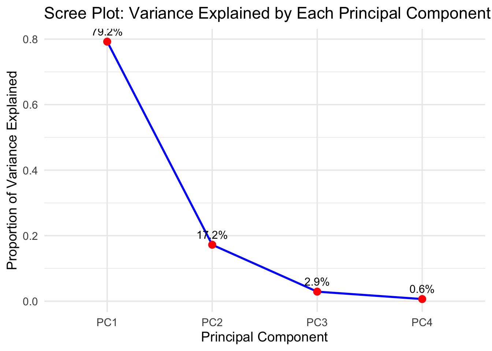

This is the first session of our Lab Learning Sessions series.
We’ll explore three related but different approaches:
PCA (Principal Component Analysis)
PCR (Principal Component Regression)
PLS (Partial Least Squares)
All methods use the same data matrix, but optimize different goals.
1.1 Learning Outcomes
Understand the objectives and math of PCA, PCR, and PLS.
Run each method on a toy dataset.
Visualize and compare results.
2 Preparing the environment
This notebook depends on a few R packages for plotting and linear algebra operations. The packages should have been installed during the initial rendering, but if not, run this code (only once!) to install the dependencies.
For this session, we’ll work with a toy dataset that mimics measurements from a pediatric integrated-omics study.
Each row represents a different child, and the columns combine microbiome diversity metrics with biomarkers of iron metabolism, along with a clinical outcome score.
Columns:
MGX_Shannon_Index Shannon diversity index estimated from metagenomic (MGX) profiles of the gut microbiome. Higher values → more diverse microbial community.
MGX_InvSimpson_Index Inverse Simpson diversity index from the same metagenomic profiles. Like Shannon, but more sensitive to dominant species.
MBX_FreeIron A simulated measure of free iron availability in the microbiome environment (MBX). Higher values suggest more free iron accessible to microbes.
MBX_Ferritin A proxy for ferritin-bound iron in the system. Represents stored iron, less directly available to microbes.
AnemiaRiskScore A synthetic clinical score reflecting risk of anemia (e.g., derived from hemoglobin, transferrin saturation, etc.). Higher values = higher risk.
4 Data
First, let’s assemble the original data, as it would be utilized as a starting point:
It’s crucial to differentiate and separate the exposures (input variables) and the outcomes (response variables) since the beginning, so let’s do that before we talk about analysis.
Tip
It is common to use capital letters (A, X) to denote data matrices (2D data) and small letters (b, y) to denote data vectors (1D)
X <- dat[, c("MGX_Shannon_Index", "MGX_InvSimpson_Index", "MBX_FreeIron", "MBX_Ferritin")]y <- dat[, "AnemiaRiskScore"]
5 Principal Component Analysis (PCA)
PCA is a dimensionality reduction technique. It takes several correlated measurements (our four “X” columns) and rewrites them as a few new, uncorrelated “principal components” that capture most of the variation in the data.
First, we must scale our input variables so that different units and spread of data are normalized:
Code
X_scaled <-scale(X)
Then perform PCA on these scaled variables:
Code
pca_result <-prcomp(X_scaled)
We can see the result of the PCA has an atrribute, rotation. These are the loadings, which represent the weights of each original variable in the linear comination that forms a principal component.
To visualize how much the total variance in the dataset is explained by each principal component, we can construct a Scree plot:
Code
var_explained <- pca_result$sdev^2/sum(pca_result$sdev^2)pca_df <-data.frame(PC =paste0("PC", 1:length(var_explained)),Variance = var_explained)ggplot(pca_df, aes(x = PC, y = Variance, group =1)) +geom_line(color ="blue", linewidth =1) +geom_point(size =3, color ="red") +geom_text(aes(label =paste0(round(Variance *100, 1), "%")),vjust =-0.8, size =4) +labs(title ="Scree Plot: Variance Explained by Each Principal Component",x ="Principal Component",y ="Proportion of Variance Explained" ) +theme_minimal(base_size =14)
We can construct a loadings plot in order to visualize the relationship between the input variables. Each point in the plot represents one of the original features, and its position indicates how strongly it contributes to the first two principal components. Variables that are close together have similar patterns across samples, while those that point in opposite directions are negatively correlated.
Code
# Extract the first two principal component loadingsloadings <-as.data.frame(pca_result$rotation[, 1:2])loadings$Variable <-rownames(pca_result$rotation)ggplot(loadings, aes(x = PC1, y = PC2, label = Variable)) +geom_point(size =4, color ="red") +geom_text(vjust =-1.2, size =5) +geom_hline(yintercept =0, linetype ="dashed", color ="gray") +geom_vline(xintercept =0, linetype ="dashed", color ="gray") +labs(title ="PCA Loadings Plot",x =paste0("PC1 (", round(summary(pca_result)$importance[2,1]*100, 1), "% variance)"),y =paste0("PC2 (", round(summary(pca_result)$importance[2,2]*100, 1), "% variance)") ) +theme_minimal(base_size =14)

In our dataset, the Shannon and Inverse Simpson indices cluster together, suggesting they capture similar information about microbiome diversity.
The scores plot shows the PCA scores for each participant, where each point represents one pediatric participant’s profile based on their microbiome diversity and iron-related measurements. The color scale indicates the Anemia Risk Score, with warmer colors corresponding to higher risk.
Code
ggplot(scores, aes(x=PC1, y=PC2, color = y)) +geom_point(size=3)+scale_color_gradient(low="blue", high ="red")+labs(title ="PCA Scores of Samples Colored by Anemia Risk",x =paste0("PC1 (", round(summary(pca_result)$importance[2,1]*100, 1), "% variance)"),y =paste0("PC2 (", round(summary(pca_result)$importance[2,2]*100, 1), "% variance)"),color ="Anemia Risk" )+theme_minimal(base_size=14)
Participants positioned close together have similar combinations of diversity and iron features, while those farther apart differ more strongly across these variables. The first principal component (PC1), which explains about 79% of the variance, appears to separate participants with higher anemia risk (red) from those with lower risk (blue).
6 Principal Component Regression (PCR)
Introduction of PCR
Code
dat_scaled <-data.frame(X_scaled, y)# run pcr with cross validation to see how many PCs to keeppcr_model <-pcr(y ~ ., data = dat_scaled, scale =TRUE, validation ="LOO")#print(summary(pcr_model))loadings <-loadings(pcr_model)print(loadings)